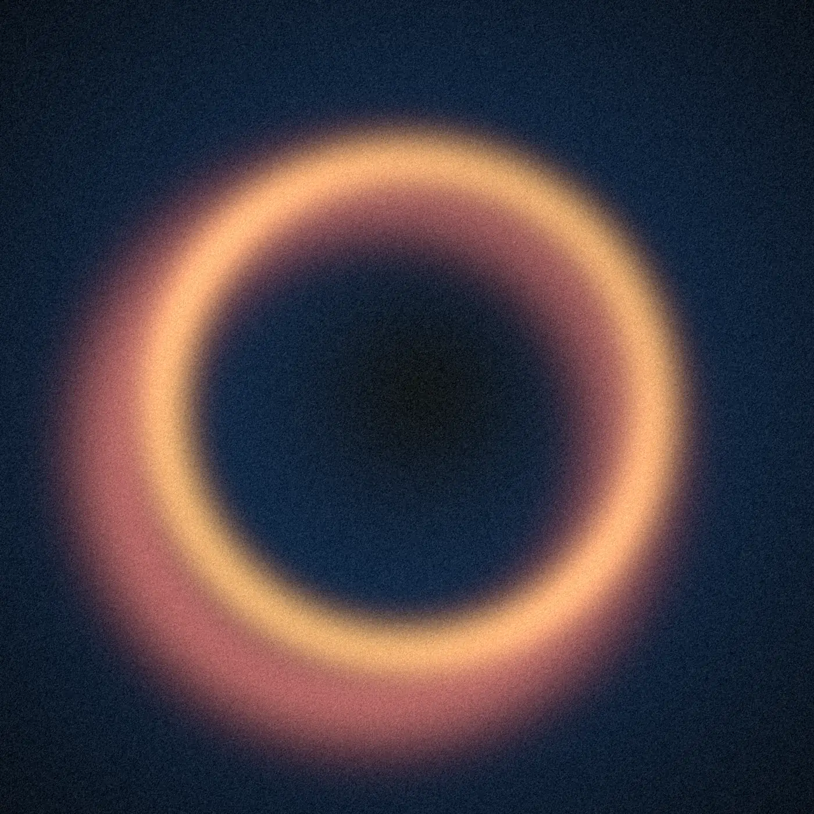
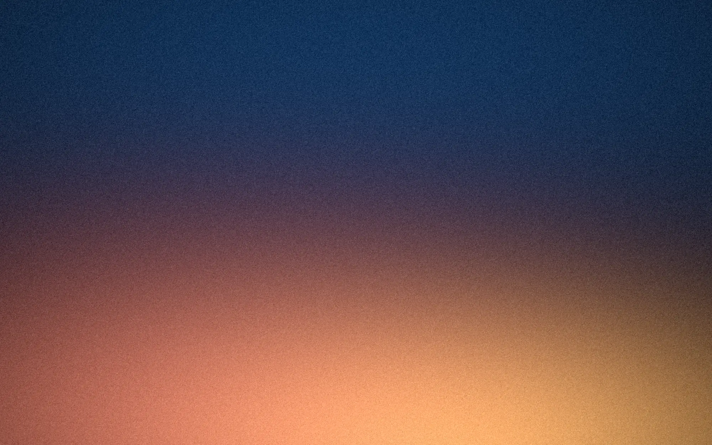
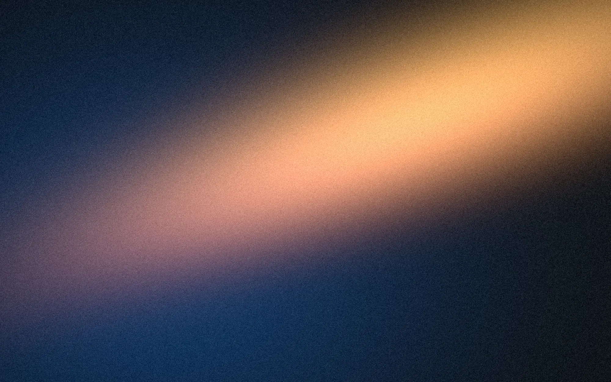
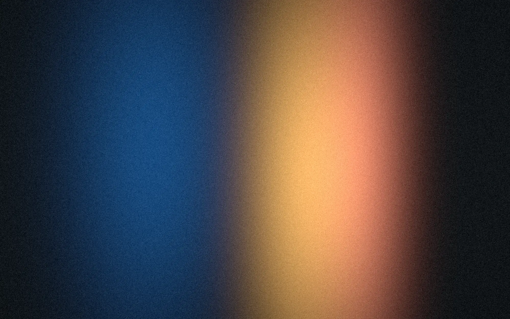
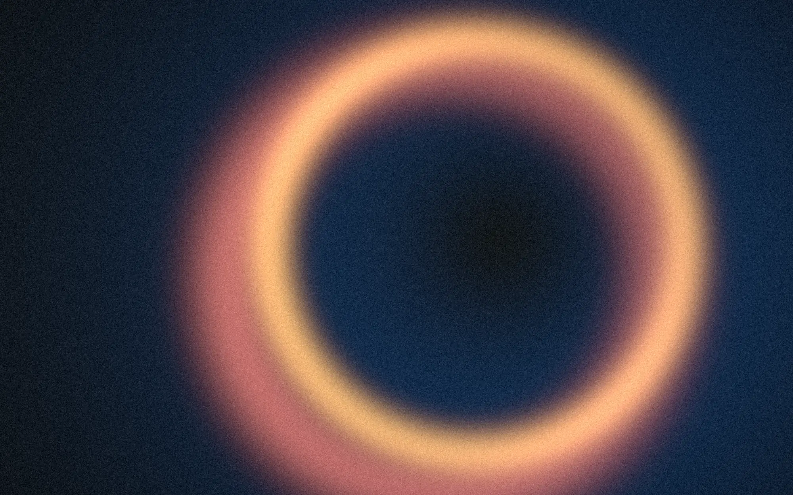
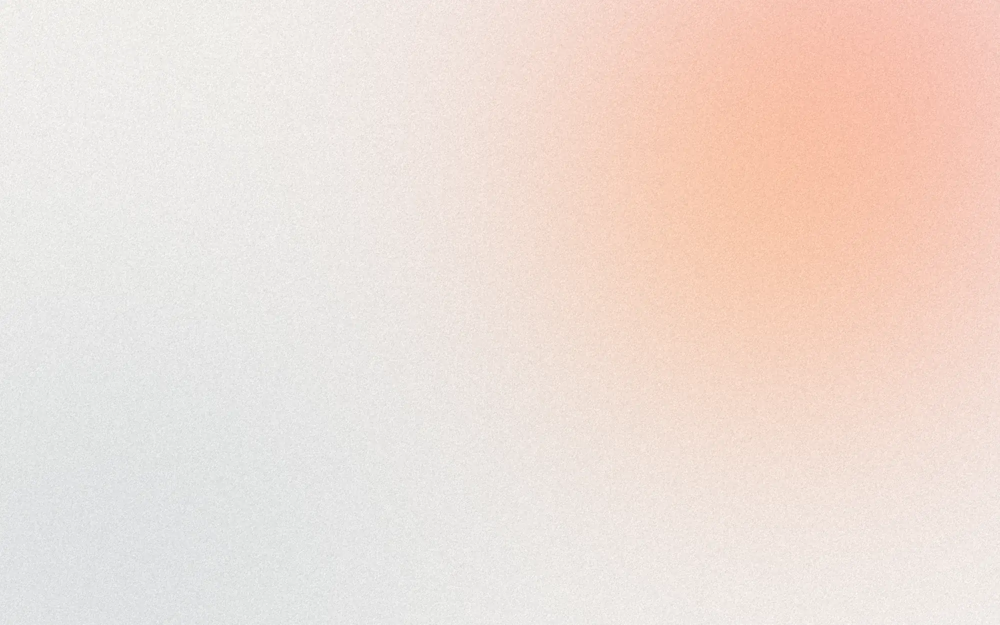
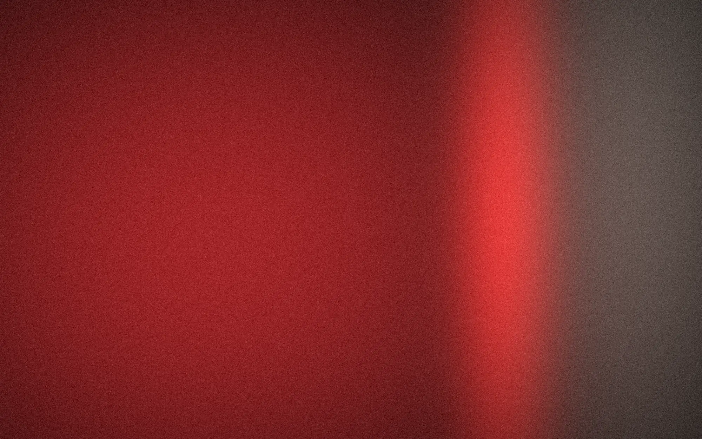
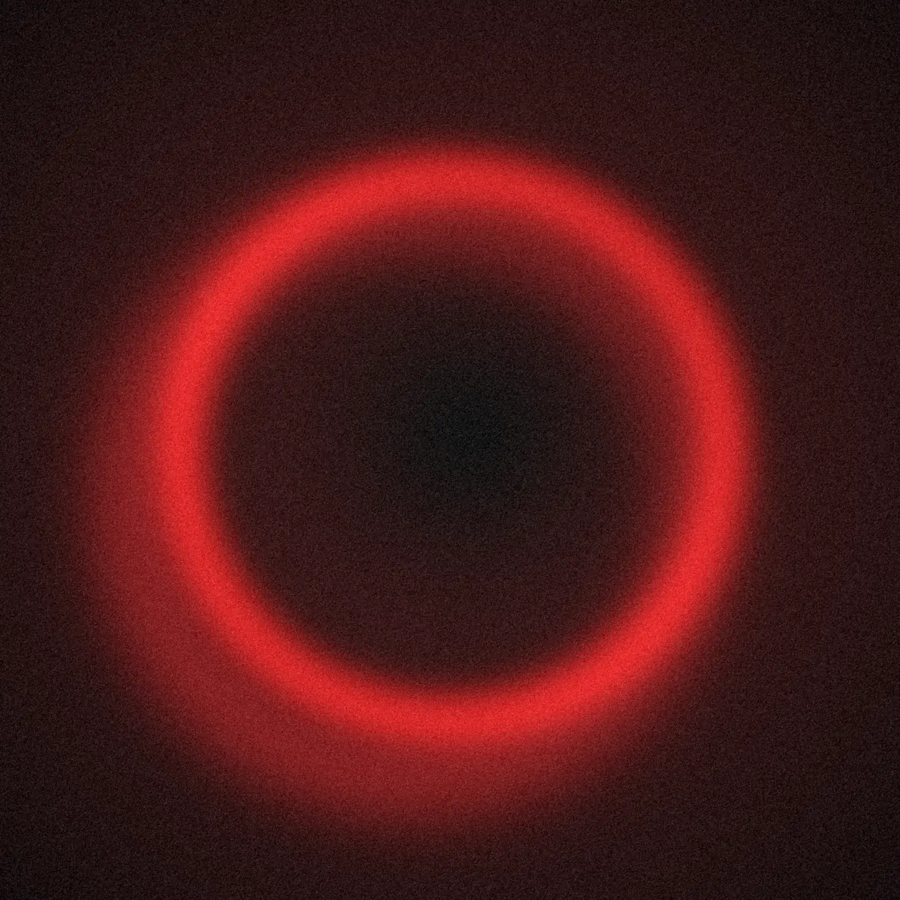

Thoughts are loud. Keep three.
Experiment 001
Everything else can blur · Brand identity v1 · Bengaluru
01 · The idea
Unobvious builds quiet technology. The identity is built on one optical idea: a sharp frame inside soft focus, and one warm light in a dark room. The frame is the product's job, sorting the noise of a day down to what matters. The light is the press: one button, one moment of attention, then you look up.
02 · Logo routes
Each one comes from the product, not from a template. We recommend Focus: it explains the company in a shape, holds up at 16 pixels, and doubles as the interface's own focus frame.
Four corner brackets around one warm dot. The frame keeps what matters; the dot is the press.
A light slightly off-centre inside a ring, like an eclipse. Atmospheric, softer, less literal.
A pure wordmark where one letter sits out of focus. Unobvious, quite literally. Wordmark only, no symbol.
A light rising over a horizon. The promise of the product: put the phone down, look up.
The device itself as an icon: one body, one button, one status light. Most product-specific, least flexible.
03 · The mark
96
48
24
16
04 · Colour · Midnight Amber
Night carries most surfaces, Moonlight carries text and calm pages, Amber is the light. Coral and Atlantic are for atmosphere in plates and gradients, never for body text. Contrast figures are text on that colour, measured.
#13181B
Primary ground
#F0EEEB
Text on night, light pages
#FFBF65
The light. Primary action
#FD8973
Warmth in plates
#003A6C
Depth in plates
#CCD5DA
Quiet surfaces
05 · Type
Everything else can blur.
Press once · Look up · 12.97° N 77.59° E
Inter Tight carries every headline and sentence, set tight and medium weight. JetBrains Mono, small, uppercase and widely spaced, labels the world: coordinates, times, figure numbers, states. Instrument Serif may appear once per page, in italic, as a human aside.
06 · Light plates
Generated, grainy, soft-focus light fields in the palette. Each plate is a few large light sources on Night with film grain, made by a script so they stay consistent and ours. One plate per section, never two side by side.








07 · Imagery and motion

The focus frame: everything in it is sharp, everything outside it is allowed to blur.
Photograph people and places slightly out of focus, with film grain. Faces are never the point; the moment is.
Every image has a single warm source: a window, a lamp, the status light. Never more than one.
When something matters, frame it. Brackets, not boxes. Only the framed thing is sharp.
Things come into focus as they arrive and blur as they leave. Slow eases, nothing bounces.
On the web, scrolling moves the camera: toward the button, through the noise, into the light.
With reduced motion, every page is complete and still. Motion is never the only way to understand something.
08 · Voice
We write like a thoughtful friend, not a product. Short sentences. Ordinary words. We say what happens, and we say what we will not do.
We say
We don’t say
09 · Applications
Aditi
Founder · Unobvious
Unobvious
Bengaluru · 12.97° N 77.59° E
Thoughts are loud. Keep three.
Everything else can blur.